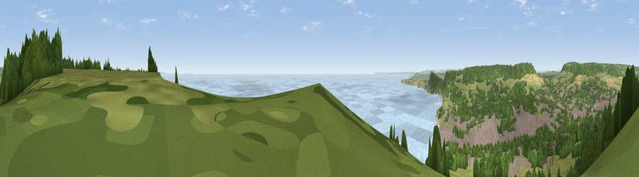

Viewpoint near Sidmouth
#913 in England · top 2% of its area beats it · near SidmouthThe view, rendered

A 360° render of this exact spot computed from the terrain model, tree cover and land cover — summer colours, afternoon light, calibrated against photographs of famous viewpoints. Real trees, hedges and buildings will differ in detail.
The panorama
Grey silhouette: terrain skyline in each direction (720 bearings, Earth curvature and refraction included). Dashed green: skyline with trees (+15 m) and buildings (+8 m) as obstacles. Blue strip: how far the ground is visible on each bearing.
Where the view opens
Wedge length = distance to the farthest visible ground on that bearing (vegetation-aware). Rings at 10, 25 and 50 km.
What fills the view
55% water · 20% grassland · 16% woodland · 8% built-up · 1% cropland
Angular shares of the visible panorama (visual magnitude), not map area. Landscape diversity 0.52 (0–1 Shannon).
Key numbers
More beautiful places nearby
The staircase of upgrades: each row has a higher view potential than everything closer. Driving times are estimates from straight-line distance, calibrated against real road routing — check an actual route before setting out.
| Place | Direction | Drive | Score |
|---|---|---|---|
| Viewpoint near Salcombe Regis | E · 1 km | ~4 min | 80.4 |
| Viewpoint near Sidmouth | WSW · 3 km | ~7 min | 83.0 |
| High Peak | WSW · 4 km | ~9 min | 85.3 |
| Golden Cap | E · 27 km | ~43 min | 88.7 |
| The Knoll | E · 40 km | ~59 min | 91.0 |
50.68232, -3.22184 · source: screening · position refined by local search. Computed location — check access rights before visiting.